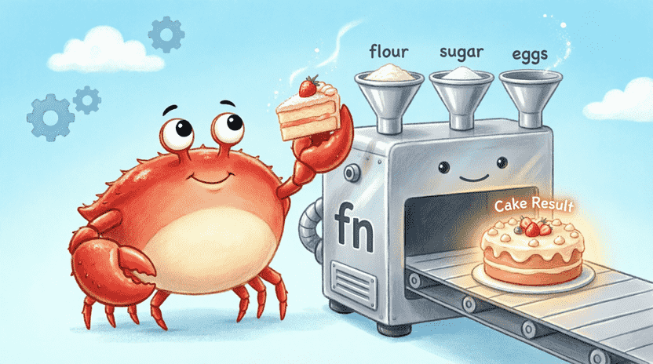
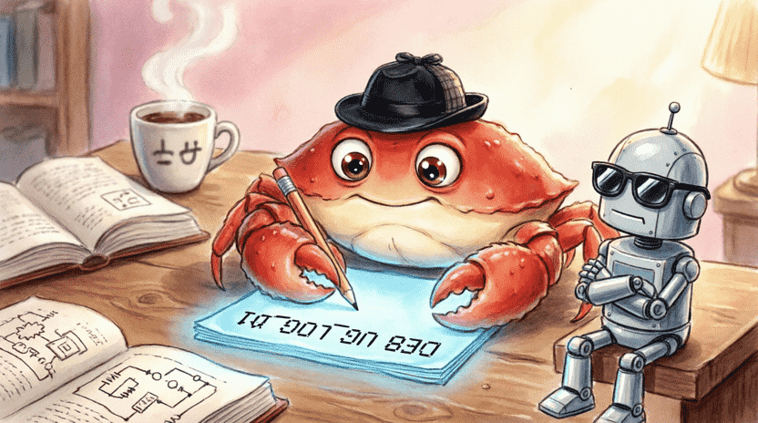

🦀 The Land of Rust: Ferris the Crab’s Space Adventures
Chapter 3: The Space Chocolate Cake Recipe (Functions, Parameters & Data Types)
📋 Chapter Outline:
3.1. The Big Kitchen Problem
3.1.1. The Story: Ferris and the Space Chocolate Cake
Ferris loves space chocolate cake! 🍰 He even has his grandmother’s secret recipe: “200g flour, 150g sugar, 3 eggs, a splash of vanilla, mix well, and bake for 30 minutes.”
The problem is: every time Ferris craves cake, he has to write down and repeat all these steps from scratch. If he wants 10 cakes, he’d write the same instructions 10 times! Exhausting, right? 😮💨
In programming, the exact same thing happens. When we want to do a repetitive task, we shouldn’t rewrite the code every time. What’s the solution? Using a Function!
3.1.2. Introducing Functions as Recipes
A function is exactly like a magical recipe with a name. Whenever you call that name, it performs all the steps written inside. You can even give it ingredients (parameters) and get a finished result back (return value). 🧁✨
In Rust, we build functions with the keyword fn (short for function). Even main is a special function that the compiler knows is where the program must start.
![[Illustration: A cartoon scene inside a spaceship kitchen. Ferris looks exhausted, surrounded by floating recipe cards that repeat “Mix, Bake, Wait.” A glowing magical cookbook labeled “fn” appears, promising to save the day. Style: vibrant children’s book illustration, warm lighting, playful mood.]](assets/images/3.1.png)
3.1.3. Our First Simple Function
Let’s build a simple function that just prints a greeting. First, create a new project:
cargo new cake_functions
cd cake_functions
Now, in src/main.rs, write this code:
fn main() {
say_hello(); // Calling the function
}
// Defining our function
fn say_hello() {
println!("Hello from inside the function!");
}🔹 fn say_hello() { ... } means: “Create a function named say_hello that takes no input and returns nothing.”
🔹 Inside main, writing say_hello(); tells the computer: “Go run the instructions in this function, then come back.”
When you run cargo run, you’ll see:
Hello from inside the function!
3.1.4. Calling Functions
The real power of a function shines when we want to repeat a task multiple times:
fn main() {
say_hello();
say_hello();
say_hello();
}See how easy that was? Instead of writing println! three times, we just called the function’s name. This keeps our code tidy and much easier to read! 🧹
![[Illustration: An educational illustration showing a large button labeled “say_hello()” being pressed three times. Each press triggers a speech bubble saying “Hello from inside the function!”. Ferris stands beside it giving a thumbs up. Style: clean, cartoon, educational infographic, bright colors.]](assets/images/3.2.png)
3.2. Building a Magic Machine (Parameters & Return Values)
The say_hello function always does the exact same thing. But more powerful functions can take inputs and produce outputs. Think of them like a magic machine that takes raw materials and delivers a finished product! 🏭
3.2.1. Functions with Input Parameters
A parameter is like the ingredient we give to a recipe. For example, let’s make a function that takes anyone’s name and greets them:
#![allow(unused)]
fn main() {
fn greet(name: String) {
println!("Hello {}! Welcome!", name);
}
}🔹 name: String means: “This function expects one parameter called name of type String (text).”
🔹 Inside the function body, name behaves just like a regular variable.
Now let’s call it in main:
fn main() {
greet(String::from("Ferris"));
greet(String::from("Sara"));
}Output:
Hello Ferris! Welcome!
Hello Sara! Welcome!
3.2.2. Multiple Parameters
We can add multiple parameters by separating them with commas:
fn bake_cake(flour_grams: i32, sugar_grams: i32, eggs: i32) {
println!("Baking a cake with {}g flour, {}g sugar, and {} eggs!",
flour_grams, sugar_grams, eggs);
}
fn main() {
bake_cake(200, 150, 3);
bake_cake(300, 200, 4); // A bigger cake!
}3.2.3. Return Values with ->
Some functions produce a result that we want to use later. For example, a function that adds two numbers and gives back the sum. We use -> followed by the return type for this:
fn add(a: i32, b: i32) -> i32 {
a + b
}
fn main() {
let sum = add(5, 3);
println!("5 + 3 = {}", sum);
}⚠️ Golden Rust Rule: In Rust, the last expression in a function without a semicolon (;) is automatically returned. In the example above, a + b has no semicolon, so its value is sent back.
If you add a semicolon (a + b;), the compiler thinks the function returns nothing, but since you promised an i32, it will complain!
3.2.4. Early Exit with return
Sometimes we want to exit a function early, before reaching the end, and send back a specific value. We use the return keyword for this. Example: A function that returns 0 if a number is negative (since length can’t be negative):
fn safe_length(n: i32) -> i32 {
if n < 0 {
return 0; // Exit immediately, don't continue
}
n // If not negative, return the number itself
}
fn main() {
println!("Safe length: {}", safe_length(-5)); // 0
println!("Safe length: {}", safe_length(10)); // 10
}return is like a “quick escape” button from the function! 🏃♂️💨
3.2.5. Exercise: Multiply and Combine
- Write a function called
multiplythat takes twoi32numbers and returns their product. - Call it in
mainand print the result. - Write another function called
squarethat takes one number and calculates its square usingmultiply.
💡 Sample Answer:
fn multiply(x: i32, y: i32) -> i32 {
x * y
}
fn square(x: i32) -> i32 {
multiply(x, x) // We reuse our multiply function!
}
fn main() {
let num = 7;
let sq = square(num);
println!("The square of {} is {}", num, sq);
}
3.3. Flour vs. Sugar (Data Types)
In cooking, you can’t swap sugar for salt (unless you want a salty cake! 🧂). In programming, every piece of data has a specific Type. Rust is very strict: if you mix up types, the compiler will warn you right away. This strictness prevents many crashes before your program even runs! 🛡️
3.3.1. Type Categories
Data types in Rust fall into two main groups:
- 🔹 Scalar: A single value. Like one number, one letter, or a true/false value.
- 🔹 Compound: A collection of multiple values. Like tuples and arrays.
3.3.2. Integers (i32, u32)
Integers are whole numbers (like 5, -42, 0). Rust has several, but the most important are:
| Type | Sign | Approx. Range | Common Use |
|---|---|---|---|
i32 | Positive & Negative | -2B to +2B | Default for whole numbers |
u32 | Positive only | 0 to ~4B | Counting, indexes |
u8 | Positive only | 0 to 255 | Single bytes, small counters |
Example:
#![allow(unused)]
fn main() {
let temperature = -5; // Rust guesses i32 automatically
let age: u32 = 12; // We explicitly said u32
let byte: u8 = 255; // Fits exactly in one byte
}3.3.3. Floating-Point Numbers (f64)
When we need decimal precision (like 3.14 or 2.718), we use floats:
- 🔹
f32: Lower precision, 32 bits. - 🔹
f64: Higher precision, 64 bits. Default for decimals.
#![allow(unused)]
fn main() {
let pi = 3.1415926535; // f64
let gravity: f32 = 9.81; // f32
}3.3.4. Booleans (bool)
Can only hold two values: true or false. Very useful in conditions:
#![allow(unused)]
fn main() {
let is_raining = true;
let has_umbrella = false;
if is_raining && !has_umbrella {
println!("Oh no, we'll get wet!");
}
}3.3.5. Characters (char)
A single letter, number, or even an emoji. In Rust, every char takes 4 bytes and can hold any Unicode character. Written with single quotes:
#![allow(unused)]
fn main() {
let first_letter = 'A';
let digit = '7';
let smiley = '😊';
let crab = '🦀'; // That's Ferris!
}3.3.6. Tuples – Boxes Side by Side
A tuple lets us group multiple values of different types together. Its length is fixed (you can’t add or remove items later).
#![allow(unused)]
fn main() {
let ferris_info = ("Ferris", 42, true, '🦀');
}We access members using a dot and an index (starting from 0):
#![allow(unused)]
fn main() {
println!("Name: {}", ferris_info.0); // Ferris
println!("Age: {}", ferris_info.1); // 42
println!("Happy? {}", ferris_info.2); // true
}You can also “destructure” a tuple to put its values into separate variables:
#![allow(unused)]
fn main() {
let (name, age, is_happy, emoji) = ferris_info;
println!("{} is {} years old and loves {}", name, age, emoji);
}3.3.7. Arrays – Organized Shelves
An array is a collection of multiple values that are all the same type and have a fixed length. Like a shelf with a set number of slots where you can only put one type of item in each.
#![allow(unused)]
fn main() {
let numbers = [10, 20, 30, 40, 50];
let first = numbers[0]; // 10
let third = numbers[2]; // 30
}To fill an array with a repeating value:
#![allow(unused)]
fn main() {
let all_fives = [5; 10]; // Means [5, 5, 5, 5, 5, 5, 5, 5, 5, 5]
}📌 A note for later: Arrays have a fixed size and are very fast. Later, you’ll learn about Vec (vectors), which can grow and shrink as needed.
3.3.8. Exercise: Personal Info Tuple
Create a tuple with your info: Name (String), Height in cm (f64), and whether you have a pet (bool). Then destructure it into separate variables and print a sentence.
💡 Sample Answer:
fn main() {
let my_info = (String::from("Aria"), 145.5, true);
let (name, height, has_pet) = my_info;
println!("My name is {}. I am {} cm tall.", name, height);
if has_pet {
println!("I have a pet! 🐾");
} else {
println!("I don't have a pet. 😢");
}
}![[Illustration: A cartoon sorting robot with labeled bins: “i32”, “String”, “bool”, “char”. Different items (numbers, letters, emojis) are flying into the correct bins. Ferris stands beside holding a checklist. Style: playful, educational, bright vector illustration.]](assets/images/3.4.png)
3.4. Secret Notes (Comments)
Sometimes we want to write explanations inside our code that the computer will completely ignore, but we (or our friends) can read later to understand why we wrote it that way. These notes are called Comments. 📝
3.4.1. Single-Line Comments //
Anything after two slashes // on the same line is treated as a comment. The compiler completely ignores it:
#![allow(unused)]
fn main() {
// This is a comment
let x = 5; // This is also a comment at the end of a line
}3.4.2. Multi-Line Comments /* */
If you need to write several lines of explanation, use /* to start and */ to end:
#![allow(unused)]
fn main() {
/*
This is a long comment.
You can write any explanation you want here.
The compiler will completely skip this section.
*/
fn do_something() { }
}3.4.3. When Should We Comment?
-
✅ Good Comment:
-
Explains why the code is written this way (e.g., “Because library X has a bug, we must use method Y here”).
-
Documents complex parts for future reference.
-
Marks unfinished work:
// TODO: Complete this part later. -
❌ Bad Comment:
-
Explains something already obvious from the code itself.
-
Example:
x = x + 1; // Add one to x(The code already says exactly that!)
3.4.4. Exercise: Comment the Guessing Game
Open your Chapter 2 guessing game code. Add short explanatory comments for each major section (random number generation, reading input, type conversion, comparison). See how much easier the code becomes to read! 🧐

3.5. Summary & Project
3.5.1. What You Learned
In this chapter, you discovered:
- ✅ What a function is and how to define it with
fn. - ✅ How to give parameters and get return values (
->). - ✅ The difference between
returnand the last expression without a semicolon. - ✅ Main data types: integers, floats,
bool,char. - ✅ Tuples for grouping different types.
- ✅ Arrays for storing fixed-length lists of the same type.
- ✅ Comments for documenting and making code readable.
3.5.2. Project: Simple Calculator
Write a program that takes two decimal numbers (f64) and an operator (+, -, *, /) from the user, then prints the result. Write a separate function for each operation.
💡 Structure Hint:
use std::io;
fn add(a: f64, b: f64) -> f64 { a + b }
fn subtract(a: f64, b: f64) -> f64 { a - b }
fn multiply(a: f64, b: f64) -> f64 { a * b }
fn divide(a: f64, b: f64) -> f64 { a / b }
fn main() {
// Get input from user (like in Chapter 2)
// Use if or match to detect the operator and call the correct function
// If operator is '/' and the second number is 0, print an error (division by zero is impossible!)
}🎁 Bonus Challenge: If the user enters an invalid operator, print an error and ask again (you can use loop).
3.5.3. Challenge: Maximum Number in an Array
Write a function called max_in_array that takes an array of i32 numbers (or a slice of it) and returns the largest value inside.
💡 Hint: Create a max variable initialized with the first element. Use a loop (while) to compare the rest. (We haven’t learned for yet, so we’ll use while.)
💡 Sample Answer with while:
fn max_in_array(arr: &[i32]) -> i32 {
let mut max = arr[0];
let mut i = 1;
while i < arr.len() {
if arr[i] > max {
max = arr[i];
}
i = i + 1;
}
max
}
fn main() {
let numbers = [15, 42, 7, 99, 23];
let result = max_in_array(&numbers);
println!("Largest number: {}", result);
}📌 Note: &[i32] means “a reference to a slice of i32 numbers”. This allows the function to look at the array’s contents without taking ownership of it. We’ll talk extensively about these “permissions” in the next chapter!
![[Illustration: Ferris standing proudly next to a computer screen showing completed code. A golden trophy labeled “Chapter 3 Master” sits on the desk. Floating code symbols (fn, i32, {}, //) surround him. Style: celebratory, vibrant children’s book illustration, encouraging mood.]](assets/images/3.6.png)